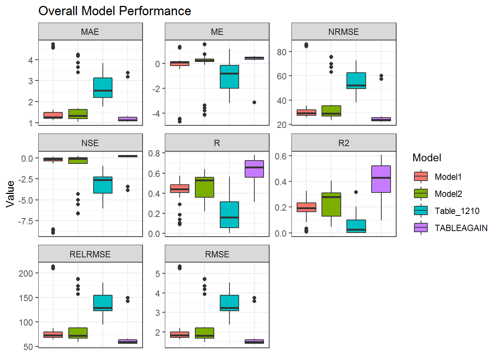
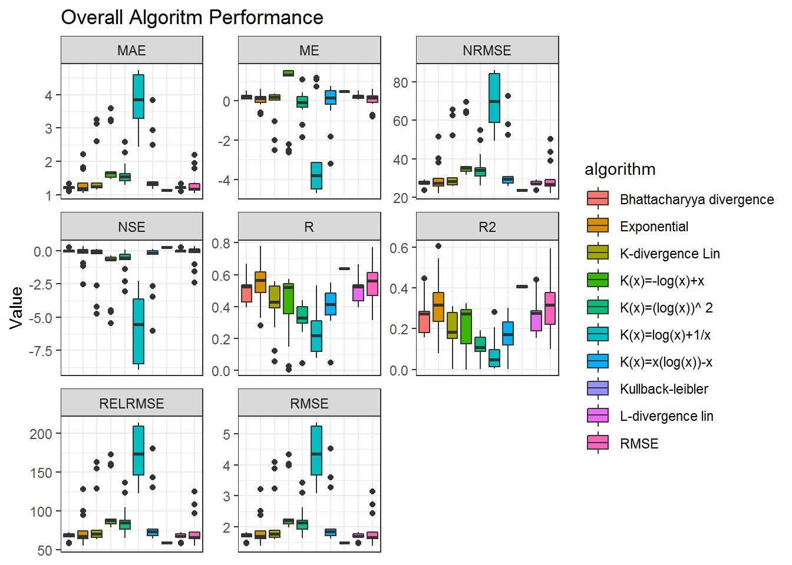
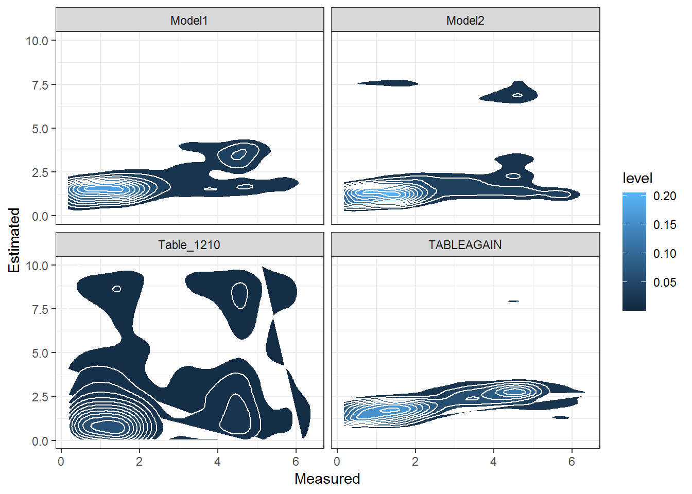
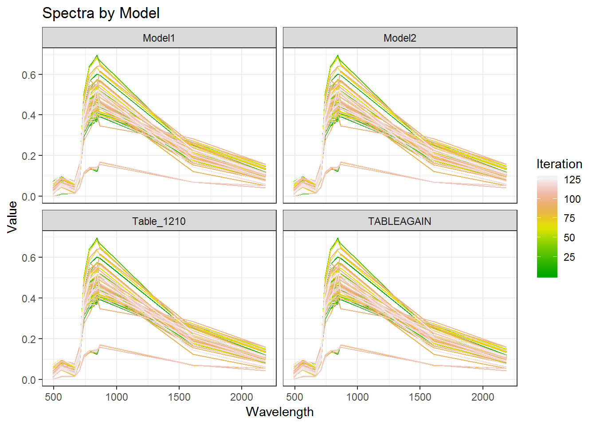
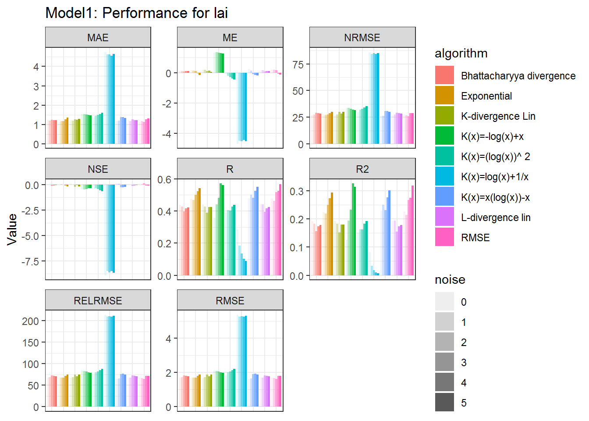
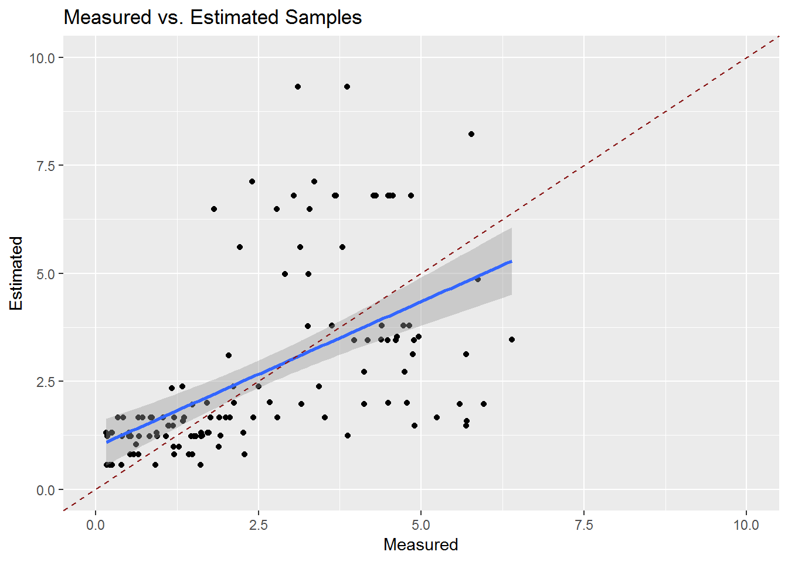

The Tutorial on this site Aims at evaluating the single models within the ARTMO Database.
Analogue to the previous tutorial the first step consists in loading the necessary functions and packages.
source("../R/Packages.R")
source("../R/Essentials.R")
source("../R/Fun_Stats_ALL.R")
source("../R/Fun_Plot.R")In a second step we analyze the Database generated with the previous Tutorial. For demonstration purposes we used a test-rds stat file containg one small Database with LUT. For detecting the model performance we have to tidy the data again in order to have all the Statistics combined in a unique column. This is done with the FormatTidy function. Important is that Each Type of Analysis is evaluated seperately (MLR, VI, Inversion).
Type<-"CF"
stat<-readRDS("./data/demo.rds") %>%
filter(!map_lgl(Results, is.null))
stat.td <- FormatTidy(stat,what="CF")First of all the extracted and tidy data is stored for immediate analysis of the whole database. This section allows to assess the Model Performance independently for each Model stored within a Database. The overall performace can e visualized using:
ggplot(stat.td,aes(Model,Value,fill=Model))+
theme_bw()+
geom_boxplot()+
theme(axis.text.x = element_text(angle = 90, hjust = 1))+
facet_wrap(.~Statistic,scales = "free")+
ggtitle("Overall Model Performance")+
theme(axis.title.x=element_blank(),
axis.text.x=element_blank(),
axis.ticks.x=element_blank())
This gives an overview on how the overall Statistics are with respect to the Model. If you want to analyze the Algorithms within each model the same can be applied to the algorithm instead of the model column
ggplot(stat.td,aes(algorithm,Value,fill=algorithm))+
theme_bw()+
geom_boxplot()+
theme(axis.text.x = element_text(angle = 90, hjust = 1))+
facet_wrap(.~Statistic,scales = "free")+
ggtitle("Overall Algoritm Performance")+
theme(axis.title.x=element_blank(),
axis.text.x=element_blank(),
axis.ticks.x=element_blank())
Furthermore the Data Structure gives us the possibility to analyze the database as a whole and not just single Results
parameters<-c("algorithm","noise")
statistics<-"R2"
stat.model.all<-stat.condense(jtable=stat,parameters=parameters,statistics=statistics) %>%
unnest
ggplot(stat.model.all,aes(Measured,Estimated))+
stat_density_2d(aes(fill = ..level..), geom = "polygon", colour="white")+
facet_wrap(.~Model)+
theme_bw()
In this way each of the colums within the Data Frame can be addressed. In order to address the nested ones (e.g. Spectra) we have to reduce the dimensionality and unnest them. Here it is convenient to select the Columns of interest for the plot. Here we selected Model and Spectra for gerating a plot taking into account each single Spectrum for the ARTMO LUT. Here all Spectra are the same since they were generated with the same validation table.
stat.td.spec<- stat %>%
select(Model,Spectra) %>%
unique %>%
filter(!map_lgl(Spectra, is.null)) %>%
unnest
g3<-ggplot(stat.td.spec,aes(Wavelength,Value,group=Iteration,color=Iteration))+
theme_bw()+
geom_line()+
ggtitle("Spectra by Model")+
facet_wrap(.~Model)+
scale_color_gradientn(colors=terrain.colors(200))
print(g3)
Often the most important fact about evaluating the Table is to understand basic parametrization as well as the applied algorithms. Dendrographs are a powerful tool to understand the recursive Linking of Parameter and Model. The `` package provides a powerful and interactive function based on HTML and Javascript for Dendropgraphs.
In this example we combined the Models (First Node) wth the parameters Alorithm, Noise, alfa, beta (Second Node)
stat.gather<-stat %>%
select(Database,Model,Name1,algorithm,alfa,beta,noise) %>%
gather(Parameter,Name1,algorithm,alfa,beta,noise) %>%
unique %>%
setNames(c("level1","level2","level3","Value")) %>%
mutate(level1 = toupper(level1))
library(collapsibleTree)
collapsibleTreeSummary(stat.gather,hierarchy=c("level1","level2","level3","Value"),
collapsed=F,
nodeSize="leafCount",root=NULL)After having an overview on how the Database is structured and how it is performing we need to decide for a Model we’re going to use for the next steps of the evaluation. For Demonstration Purposes we go with the Model1 Model. we can reduce the dimensionality of the stat database by filtering it by the desired model
model<-"Model1"
stat.model<-stat.td %>% filter(Model==model)If we now are interested in testing a few parameters and their impact on the overall performance we can use the same approach as before while testing the complete database. First I would lke to try how the performance of the Model changes based on the noise I added to the Model
stat1<-stat.model %>% mutate(noise=as.factor(noise))
ggplot(stat.model,aes(algorithm,Value,fill=algorithm,alpha=noise,group=noise))+
theme_bw()+
geom_bar(stat="identity",position="dodge")+
facet_wrap(Statistic~.,scales = "free")+
theme(axis.text.x = element_text(angle = 90, hjust = 1))+
ggtitle(paste0(model,": Performance for ", stat.model$Name1))+
theme(axis.title.x=element_blank(),
axis.text.x=element_blank(),
axis.ticks.x=element_blank())
Even though each of the Statistics in this Example has not performed as we would have expected (low R2 and fairly high RMSE values) we can observe the difference between alorithms as well as the impact of the Noise on the Results. First of all we calculate the GGplots for each of the results. GGplots are mathematical rapresentations on how the plot will look like. The Graph is generated as soon as the object in the list is printed. Therefore we add a new column ResultGG to the Tibble containing the generated GGplots. These can be called later depending on the parameters desired.
model<-"Model1"
parameters<-c("algorithm","noise")
statistics<-"R2"
stat.model.gg<-stat.condense(stat,model,parameters,statistics,addGG = T)
print(stat.model.gg)## # A tibble: 45 x 7
## Model Store.ID R2 algorithm noise Results ResultGG
## <chr> <int> <dbl> <chr> <dbl> <list> <list>
## 1 Model1 1 0.226 RMSE 0 <tibble [126 ~ <S3: gg>
## 2 Model1 2 0.215 RMSE 1.25 <tibble [126 ~ <S3: gg>
## 3 Model1 3 0.268 RMSE 2.5 <tibble [126 ~ <S3: gg>
## 4 Model1 4 0.275 RMSE 3.75 <tibble [126 ~ <S3: gg>
## 5 Model1 5 0.320 RMSE 5 <tibble [126 ~ <S3: gg>
## 6 Model1 6 0.193 Bhattacharyya dive~ 0 <tibble [126 ~ <S3: gg>
## 7 Model1 7 0.184 Bhattacharyya dive~ 1.25 <tibble [126 ~ <S3: gg>
## 8 Model1 8 0.157 Bhattacharyya dive~ 2.5 <tibble [126 ~ <S3: gg>
## 9 Model1 9 0.174 Bhattacharyya dive~ 3.75 <tibble [126 ~ <S3: gg>
## 10 Model1 10 0.179 Bhattacharyya dive~ 5 <tibble [126 ~ <S3: gg>
## # ... with 35 more rowsFor further Testing we use the Exponential Alorithm together eith a noise value of 5 and have a look at the difference between measurend and simulated data.
algorithm.s<-"Exponential"
noise.s<-5
gg.select<-stat.model.gg %>%
filter(algorithm==algorithm.s & noise==noise.s)
gg1<-gg.select$ResultGG[[1]]
gg1
And now interactive
loadandinstall("plotly")
ggplotly(gg1)